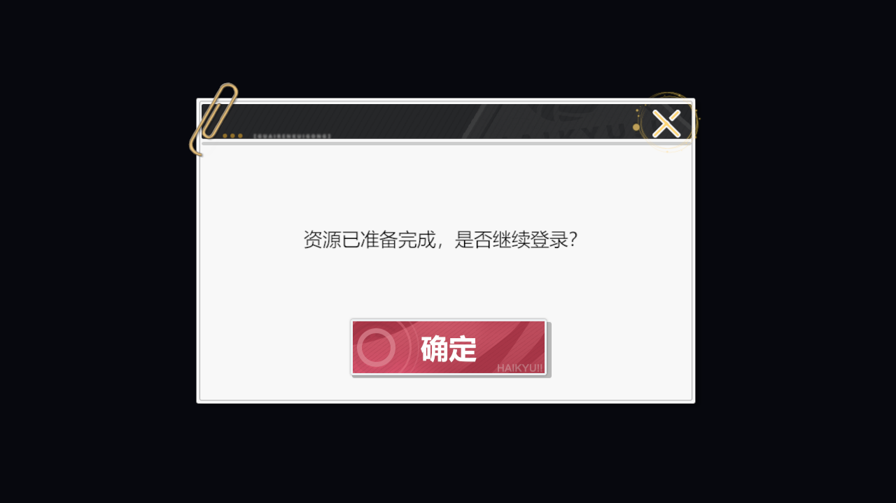

1 最终效果

此图由 Unity 相机在隔离预览场景中实际渲染，未将整屏效果图作为预制底图。
2 交付资产
| 产物 | 位置或来源 |
|---|
| 最终预制 | app/client/Assets/GameAI/Tests/UiLibrary/LoginTips/UILoginTips.prefab |
| 原始视觉资源 | 5 张独立贴图，从数据库版本 89 的 visual_blobs 读取；保持节点绑定和九宫格边界。 |
| 中文字体 | 原项目 msyh.ttc 与 msyhbd.ttc，直接导入；本次额外适配，尚不属于数据库自动导出的字体链路。 |
| 复现参数 | restore.json，引用已导入的 Unity 资产路径。 |
| 检查证据 | Unity 预制检查；交付资源哈希 |
3 验证
- 前置：当前 Unity 工程已打开，源 SV 工程只读；提取并入库成功。
- 操作：从数据库取出布局、绑定和 5 张贴图；通过 UnityCLI 导入，执行 restore dry-run 后正式生成。
- 预期：底板、装饰、按钮、文本可见，无丢失引用。实际：10 个节点、29 个组件（含 Transform），缺失脚本 0，缺失引用 0，issues 为空。
- 实际渲染检查：1280×720，中文正确，按钮和装饰完整。Unity 编译完成，Console error 查询为空。
4 适配说明
原项目文字组件为自定义脚本，本次用标准 UGUI Text 映射其字号、颜色和对齐。原正文为空、按钮为本地化编号，测试文案为“资源已准备完成，是否继续登录？”和“确定”；原本隐藏的标题节点保持隐藏。没有携带业务代码，不包含登录、确认、关闭的业务处理。
该源窗口没有动画与粒子引用，本次不用于证明动画、特效或自定义 Shader 的还原能力。图片为原项目资源，保留其中已有视觉标识；这次没有调用生图，也不声称与原项目运行时画面像素一致。未修改或保存用户当前场景。